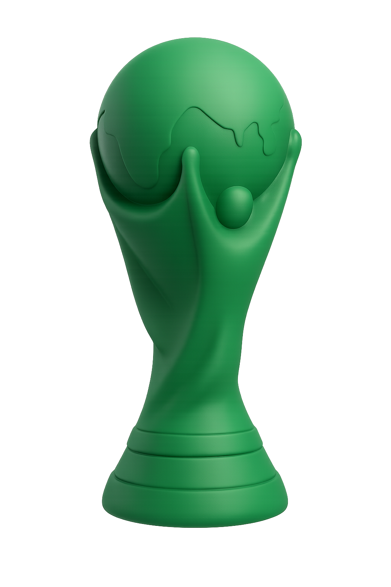
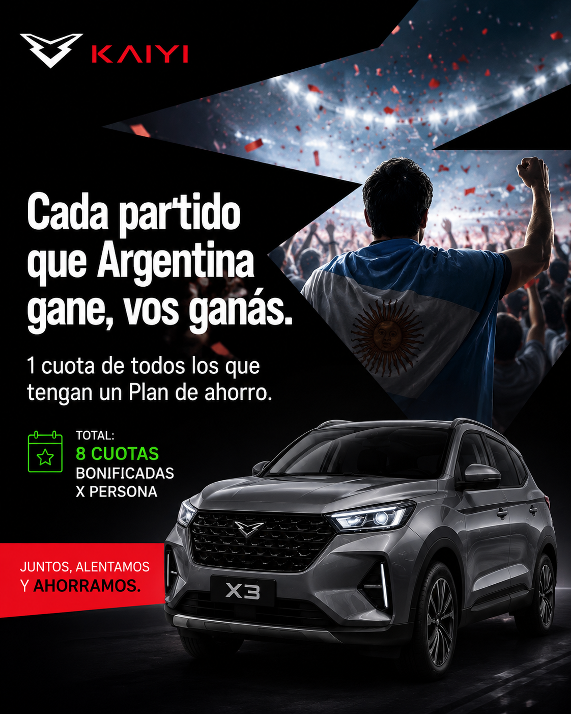
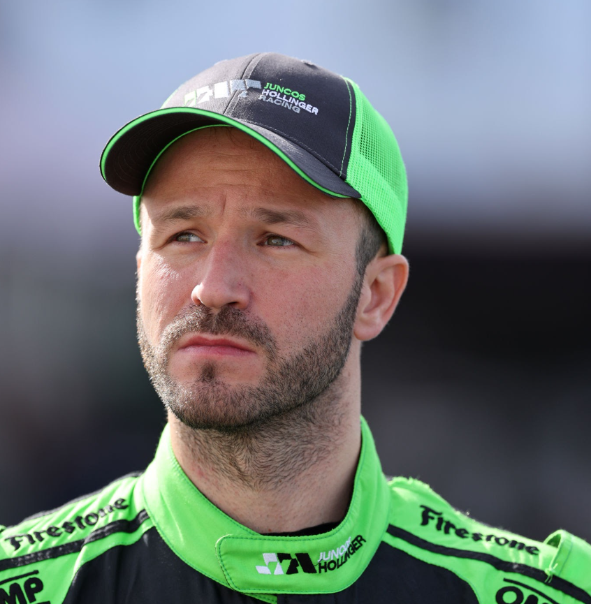
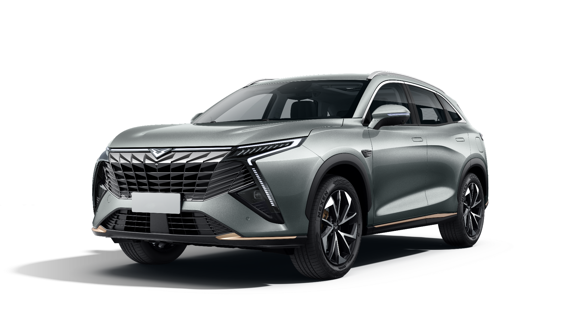
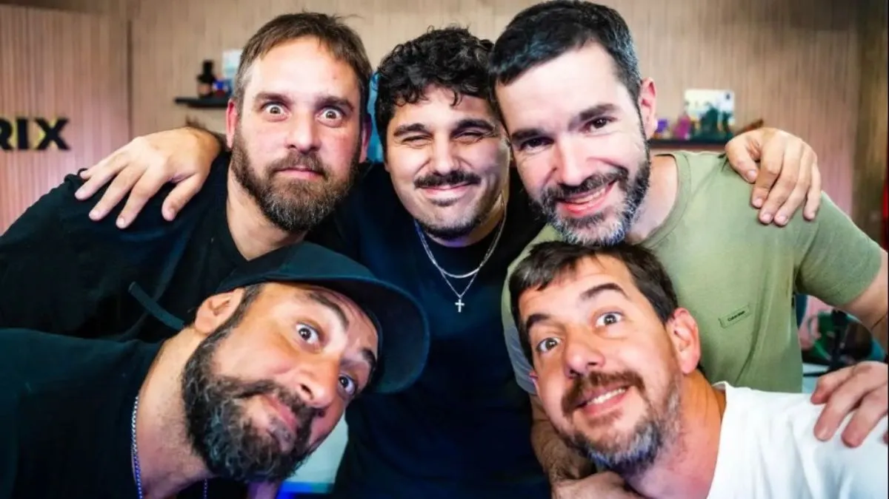
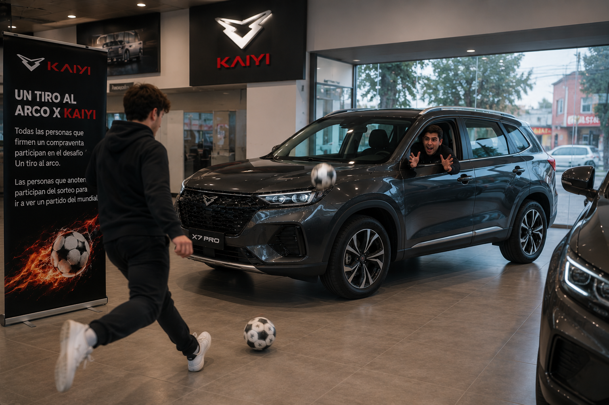
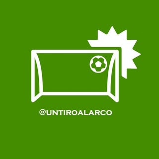
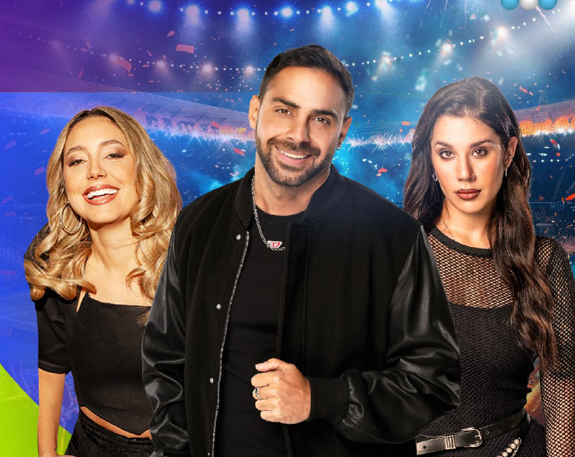
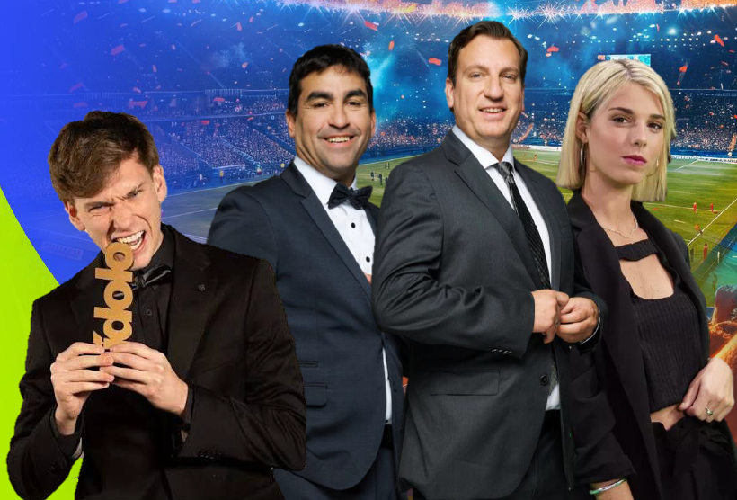

Keep Young. Keep Fun. Own the World Cup.
Kaiyi doesn't compete as an official sponsor, it competes in fan culture. A FIFA World Cup 2026 plan to put Kaiyi where Argentina actually lives the tournament: the stream, the meme, the previa, the group chat.

The world champions
do whatever they want.
The new generations won't just watch the game, they'll tell the story. This will be the most digital World Cup in history: Gen Z and Millennials decide what gets shared, what trends, and which brands lead the conversation.
USA · Mexico · Canada
First 48-team Cup
New Round of 32
Biggest event ever
June 11 to July 19, 2026 · 16 host cities across 3 countries.
76% of football fans in the US are Millennials or Gen Z. 72% of Gen Z use social media for sports, usually across five or more platforms, and watching live now means a second screen with commentary, memes and highlights running at the same time.
This is exactly where Kaiyi will live. Not as the official sponsor, in the conversation around it.
In Argentina, the World Cup
is the country.
Argentina arrives as defending champion, Qatar 2022, the third star, Messi's crown. Here the World Cup final isn't just the biggest sporting event: it's the single largest shared cultural moment of the entire country.
tuned into the Qatar 2022 final
Nearly every TV on, one match
Most-watched in history
Nov-Dec 2022
When Argentina plays, the whole country looks at the same screen at the same second. That is the moment Kaiyi will own, not from the box, from the feed.
Kaiyi doesn't buy the stadium.
It wins the fans.
Kaiyi doesn't compete as an official sponsor, it competes in fan culture. Our move is simple: we're going to own the World Cup.
Awareness
Show up everywhere the fan lives the Cup: streams, social, dealerships and street content, with a youthful, fun voice.
Engagement
Turn watching into playing: challenges, giveaways and content the audience wants to share.
Conversion
The end goal: turn fans into buyers. Every lead we capture is a step toward the real objective, getting people to buy a Kaiyi.
3 ways to own the World Cup.
3 ideas to put Kaiyi
at the center of the party.
Three plays. One spine: Keep Young, Keep Fun. Each one moves the fan from watching to playing, winning and laughing, with Kaiyi.
Your plan shrinks
with every win.
Every time Argentina wins a match, Kaiyi covers one installment for all active savings-plan members, up to 8 installments per customer across the tournament. We turn the savings plan, the most "grown-up" purchase there is, into a party Kaiyi pays for.
1 installment
covered
For every active Kaiyi X3 Savings Plan member.
Up to 8
installments
The further the Selección goes, the less you pay. Winning literally rewards you.

Creative key visual: "Cada partido que Argentina gane, vos ganás."
The grand finale: if the Selección wins it all, we raffle a Kaiyi X3 among every active savings-plan member. The whole country wins, and one member drives home a Kaiyi.

A real champion
puts his face on it.
We amplify the whole campaign with Agustín Canapino, the most decorated driver in Argentine motorsport and a Kaiyi brand ambassador. Win by win, he announces every covered installment, and if Argentina lifts the Cup, he's the one who hands over the raffled X3.
It's the perfect bridge: the authority of a champion behind the wheel meets the passion of football, in Kaiyi's young, fun voice.
Campaign across Google, Meta and TikTok promoting the benefit in real time, win by win.
Canapino's content and dealership comms amplify every covered installment and the champion raffle.
Eligibility: customers who subscribe to a Kaiyi X3 Savings Plan during the World Cup campaign period.
A Kaiyi for one fan.
Un Kaiyi para un hincha
One mechanic, zero conditions: we raffle a Kaiyi X3, guaranteed, among everyone who registers. Then we push that single raffle on four fronts, each one owning a different part of the funnel.

A 0km Kaiyi X3 for one lucky fan. Entering is frictionless: you register on the campaign landing page, and that's it. The draw happens live at the end of the World Cup, keeping it transparent and turning the finale into its own content moment.
guaranteed
just register
amplifying it

During the World Cup, Paren la Mano, Vorterix's flagship show, hosted by Luquitas Rodríguez, streams live from the US. We build a branded segment: "the Keep Young, Keep Fun player of the matchday," picking the youngest, most fun player of each round.
Each segment closes with a classic PNT calling out the car raffle, so the audience that's already watching jumps straight into entering.
There's already a press campaign in motion around the launch of the Kaiyi brand and the new X7 Hybrid. We fold the raffle into that press release, making it more newsworthy and earning organic coverage that amplifies the giveaway across media.
One story, two payoffs: it positions the brand launch and pushes the raffle at the same time.
Base campaign all tournament, with budget spikes in the hours after every Argentina match, when the hype peaks.
In-platform lead forms (less friction = more entries) and retargeting of anyone who watched the Un Tiro al Arco video or didn't finish registering.
Selección fans + car-purchase intent + Kaiyi lookalikes, geo-targeted around dealerships. Dynamic creative that reacts to each result, fronted by Canapino.

We turn the car into the goal. Un Tiro al Arco, one of the biggest football accounts on TikTok and Instagram, publishes the activation video, amplifying that a car is up for grabs.
At the dealership, anyone who takes the shot and scores walks away with Kaiyi merch. The challenge: we open a vehicle window and fans try to kick the ball inside from 10 meters. It drives foot traffic to the showroom and pushes people into the raffle.

@untiroalarco →Kaiyi × Telefe.
Telefe is the most-watched free-to-air channel in Argentina today, and during the World Cup that lead only grows. Telefe sent us their plan, and we built Kaiyi into it on three fronts.
Kaiyi's launch spot runs in the previa or the post of the 31 most-watched World Cup matches, every Argentina game included. By calendar it starts with Argentina's 2 warm-up friendlies, then rolls through the tournament's biggest matches.
The most-watched
warm-up friendlies
Previa or post
During the World Cup, Telefe launches its own streaming channel with two programs, and we get 10 PNTs across the Cup, 5 in each, hosted by the most relevant names of each world, from Grego Roselló to Maxi López and Teo D'elia.

The Show · Previa
Lifestyle, color and entertainment. Hosts: Grego Roselló, Sofí Martínez, La Tora. 5 PNTs.
Previa · show & lifestyle
Core Football
Debate, analysis and football news. Hosts: Maxi López, Teo D'elia, Turco Husain, Sarita. 5 PNTs.
Core football · analysis| Content | Platform | Format | Spots / airing | Airings | Total spots |
|---|---|---|---|---|---|
| Friendlies (June) | Previa or post | In-break | 15 | 2 | 30 |
| World Cup matches | Previa or post | In-break | 15 | 31 | 465 |
| Digital | Streaming | PNT · previa | 1 | 10 | 10 |
This single number covers everything in the table: 495 in-break spots in the previa or post of the matches (15 per broadcast, across 2 Argentina friendlies + 31 World Cup matches), plus 10 PNTs in Telefe's two streaming shows. No hidden extras, no per-match fees, the full tournament in one package.

Let's own the
World Cup.
Keep Young. Keep Fun. Let's put Kaiyi at the center of the biggest cultural moment in Argentina.